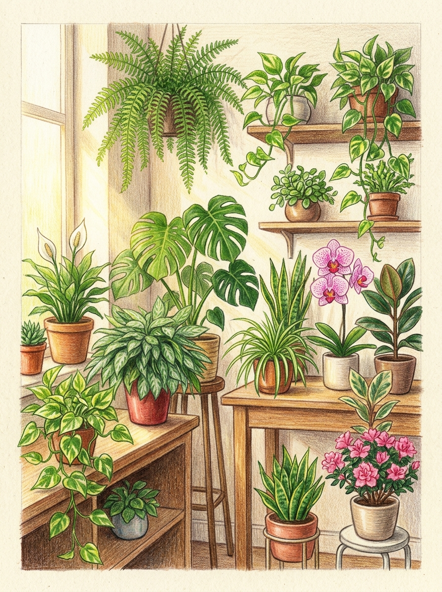

A szobanövények nevelése és gondozása nemcsak esztétikai élményt nyújt, hanem bizonyítottan javítja a lakás levegőjének minőségét és csökkenti a mindennapi stresszt. A sikeres növénygondozás első és legfontosabb lépése a megfelelő fényviszonyok biztosítása, hiszen a különböző fajok eltérő mennyiségű napfényt igényelnek. Míg a pozsgások és a kaktuszok a közvetlen, déli napsütést kedvelik, addig a legtöbb trópusi levéldísznövény a szűrt vagy közvetett fényt hálálja meg a legjobban.
Az öntözés terén a leggyakoribb hiba a túlgondozás, amely a gyökerek rothadásához és a növény pusztulásához vezethet. Mindig ellenőrizzük a talaj felső rétegének nedvességét az ujjunkkal, mielőtt újra vizet adnánk a növénynek. A megfelelő öntözés mellett a lakás páratartalmának szabályozása is kulcsfontosságú, különösen a téli fűtési szezonban, amikor a száraz levegő megviselheti a trópusi fajokat. A növények leveleinek rendszeres permetezése lágy vízzel vagy egy párásító készülék üzemeltetése sokat segíthet az ideális mikroklíma fenntartásában.
A növekedési időszakban, azaz tavasztól őszig, a szobanövényeknek rendszeres tápanyag-utánpótlásra van szükségük a megfelelő fejlődéshez. Használjunk a növény típusának megfelelő folyékony tápoldatot, de ügyeljünk a csomagoláson látható adagolási útmutató betartására. A növények tisztán tartása szintén elengedhetetlen, mivel a leveleken megtelepedő por gátolja a fotoszintézist, így érdemes őket időnként nedves kendővel áttörölni.
Ahogy a növény fejlődik, a gyökerei kinőhetik a jelenlegi cserepét, ami indokolttá teszi az időnkénti átültetést egy kicsivel nagyobb edénybe. Az átültetéshez mindig friss, jó vízelvezetésű és tápanyagban gazdag virágföldet válasszunk, hogy biztosítsuk a stabil alapokat. Rendszeresen vizsgáljuk meg a levelek fonákját és a hajtásokat, hogy időben észrevegyük az olyan esetleges kártevőket, mint a takácsatkák vagy a pajzstetvek. A beteg vagy elszáradt levelek azonnali eltávolításával nemcsak a növény megjelenésén javítunk, hanem megelőzzük a fertőzések terjedését is. Végül pedig ne feledjük, hogy minden növény egyedi élőlény, ezért a gondos megfigyelés és a türelem a hosszú távú siker igazi kulcsa.
1. Könnyen gondozható szobanövények
Legényvirág (Zamioculcas zamiifolia)
.jpg "Legényvirág")
A legényvirág, ismertebb nevén ZZ növény, Kelet-Afrikából származó rendkívül ellenálló szobanövény. Sötétzöld, viaszos fényű levelei nemcsak esztétikus látványt nyújtanak, hanem kiválóan raktározzák is a nedvességet. Ez a növény szinte bármilyen fényviszonyok között megél, beleértve a gyengébben megvilágított irodai helyiségeket is. A közvetlen, erős napsütést viszont érdemes kerülni, mert az megégetheti a vastag leveleket. Kezdő kertészek számára az egyik legbiztonságosabb választás, mivel szinte elpusztíthatatlan.
Az öntözés tekintetében a kevesebb mindig több ennél a fajnál, hiszen a gyökérgumói hosszan tárolják a vizet. Két öntözés között hagyjuk a földjét teljesen kiszáradni, mert a túlöntözés könnyen gyökérkorhadáshoz vezethet. Télen még kevesebb vizet igényel, ilyenkor elég akár havi egyetlen alkalommal megöntözni. A pangó vizet minden esetben távolítsuk el a cserép alól vagy a kaspóból. A szárazságot hetekig jól bírja, így utazások idején sem kell aggódnunk miatta.
A növény a normál szobahőmérsékletet kedveli, a 18 és 26 Celsius-fok közötti tartomány ideális számára. A hideg huzatot és a 15 Celsius-fok alatti hőmérsékletet nem viseli jól, ezért télen tartsuk távol a nyitott ablakoktól. Tápoldatozásra alig van szüksége, tavasztól őszig havonta egyszer elegendő hígított zöldnövény-tápoldatot adni neki. Szaporítása levéldugványokkal vagy tőosztással is lehetséges, bár a gyökereztetés lassú folyamat. Kártevők ritkán támadják meg, így kevés növényvédelmi feladatot ad a tulajdonosának.
Az átültetést elég két-három évente elvégezni, amikor a gyökerek már láthatóan feszítik a műanyag cserepet. Használjunk jó vízáteresztő képességű, laza szerkezetű virágföldet, amelyet perlittel is keverhetünk. A levelek pormentesítése érdekében időnként töröljük át őket nedves ruhával a ragyogó fény megőrzéséhez. Fontos megjegyezni, hogy a növény minden része enyhén mérgező, ezért kisgyermekektől és háziállatoktól tartsuk távol. Ha figyelünk a mérsékelt öntözésre, hosszú évekig lakásunk dísze marad ez a csodás növény.
Anyósnyelv (Sansevieria trifasciata)
.jpg "Anyósnyelv")
Az anyósnyelv az egyik legkedveltebb és legigénytelenebb szobanövényünk, amely Nyugat-Afrikából származik. Függőlegesen növekvő, kard alakú levelei és egyedi mintázata miatt modern belső terek tökéletes dísze. Kiváló légtisztító képességéről ismert, hiszen éjszaka is oxigént termel és szűri a káros anyagokat. Nagyon jól alkalmazkodik a változatos környezeti feltételekhez, a fényszegény sarkoktól a napos ablakpárkányokig. Szívóssága miatt ideális választás elfoglalt emberek vagy kezdő növénytartók számára.
A vízigénye kifejezetten alacsony, mivel húsos leveleiben nagy mennyiségű nedvességet képes raktározni. Mindig várjuk meg, amíg a talaj felső és alsó rétege is teljesen kiszárad az öntözések között. A túlöntözés a leggyakoribb hiba, amely a levelek puhulásához és tőkorhadáshoz vezethet. Télen akár négy-hat hétig is kibírja öntözés nélkül a hidegebb szobákban. A cserép alatt soha ne hagyjung megállni vizet, mert az gyorsan elpusztíthatja a gyökérzetet.
Hőmérsékleti igényeit tekintve az átlagos lakáskörülmények tökéletesen megfelelnek számára az év minden szakában. A 15 és 28 Celsius-fok közötti hőmérsékleten fejlődik a legszebben, a fagyot viszont egyáltalán nem bírja. A levegő páratartalmára nem kényes, a száraz panellakások levegőjét is probléma nélkül elviseli. Tápanyagpótlásra tavasztól őszig havonta egyszer van szükség, kis dózisú pozsgás-tápoldattal. Szaporítása tőosztással rendkívül egyszerű és gyors sikert garantál a növénykedvelőknek.
Átültetni csak akkor szükséges, ha a növény már szétfeszíti a cserép falát a hajtásaival. Válasszunk nehéz agyagcserepet, mert a magas levelek miatt a növény könnyen felborulhat. A talaj keverékéhez adjunk homokot vagy perlitet, hogy biztosítsuk a kiváló vízelvezetést. A leveleket érdemes havonta egyszer áttörölni a felgyülemlett portól a jobb fényhasznosítás érdekében. Megfelelő gondoskodás mellett évtizedekig életben marad és rendszeresen új sarjakat hoz.
Szobai futóka (Epipremnum aureum)
.jpg "Szobai futóka")
A szobai futóka egy rendkívül közkedvelt, gyorsan növekvő kúszónövény, amely a Salamon-szigetekről származik. Szív alakú, sárga vagy fehér mintás levelei csüngő cserépben és támasztékra futtatva is csodásan mutatnak. Kiválóan tolerálja a gyengébb fényviszonyokat, bár tarka levelei világos helyen válnak igazán látványossá. A lakás levegőjéből szorgalmasan kiszűri a benzolt és a formaldehidet, javítva a szoba levegőminőségét. Kezdők számára sikerélményt garantál, hiszen gyorsan növekszik és rendkívül megbocsátó a hibákkal szemben.
Az öntözést tekintve rendkívül rugalmas, de a legjobb, ha a föld felső rétegének száradásakor öntözzük meg. Ha elfelejtjük meglocsolni, levelei kókadással jelzik a vízhiányt, de locsolás után gyorsan talpra áll. A pangó vizet kerüljük, mert a tartósan nedves talaj a gyökerek rothadásához vezet. Télen csökkentsük az öntözés gyakoriságát, hagyjuk jobban kiszáradni a földjét. Nyáron a melegebb napokon meghálálja, ha leveleit néha tiszta vízzel permetezzük.
A szobahőmérséklet teljesen megfelelő számára, ideális esetben 18 és 24 Celsius-fok közötti környezetben érzi jól magát. A 13 Celsius-fok alatti hőmérsékleten a növekedése megáll, és levelein barnás foltok jelenhetnek meg. Tavasztól őszig kéthetente adhatunk neki általános zöldnövény-tápoldatot a gyorsabb és dúsabb növekedésért. Visszavágással könnyen formázható és bokrosodásra ösztönözhető, ha túl hosszúra nyúlnának a szárai. A levágott szárhajtások vízben gyökereztetve napok alatt új gyökeret növesztenek.
Az átültetést egy-két évente érdemes elvégezni tavasz elején, mindig kicsit nagyobb cserépbe költöztetve. A talaj legyen jó minőségű, tőzeges virágföld, amely megtartja a szükséges nedvességet, de nem mocsarasodik. Ha levelei teljesen zölddé válnak, az azt jelzi, hogy a növény túl sötét helyen van. A kártevők közül a pajzstetvek néha megtámadhatják, de szappanos lemosással könnyen védekezhetünk ellenük. Megfelelő ápolással méteres hajtásokat nevel, amelyek gyönyörű zöld zuhatagként díszítik az otthonunkat.
Zöldliliom (Chlorophytum comosum)
.jpg "Zöldliliom")
A zöldliliom, vagy más néven csíkos csüngőke, az egyik legkedvesebb és legigénytelenebb klasszikus szobanövény. Keskeny, ívesen hajló csíkos levelei és csüngő sarjai egyedi megjelenést kölcsönöznek neki. Bármilyen fényviszonyhoz jól alkalmazkodik, de a világos, közvetlen naptól védett helyeken fejlődik a legszebben. Ismert nagyszerű légtisztító tulajdonságairól, hatékonyan méregteleníti az otthoni levegőt. Gyerekszobákba és háziállatok mellé is tökéletes választás, mivel teljesen veszélytelen és nem mérgező.
Vízigénye közepes, kedveli az egyenletesen nedves, de nem túllocsolt földet a növekedési időszakban. Húsos gyökerei képesek némi vizet tárolni, így a rövidebb szárazságot is könnyedén átvészeli. A túlöntözést azonban kerüljük, mert a felgyülemlő víz a gyökérzet károsodását okozhatja. Ha a levelek vége megbarnul, az általában a túl száraz levegőre vagy a csapvíz klórtartalmára utal. Télen mérsékeljük a locsolást, és csak akkor öntözzük, ha a talaj felszíne kiszáradt.
A növény a megszokott szobahőmérsékleten érzi a legjobban magát, a 15–22 Celsius-fok közötti tartományban. A hűvösebb helyiségeket is jól tolerálja, feltéve, hogy a hőmérséklet nem esik 10 Celsius-fok alá. Tavasztól kora őszig kéthetente érdemes kiegyensúlyozott tápoldattal segíteni a fejlődését és a sarjképződést. Kis fehér virágai hosszú indákon jelennek meg, melyek végén apró sarjnövények fejlődnek ki. Ezek a sarjak leválasztás után vízben vagy közvetlenül földbe ültetve rendkívül gyorsan meggyökeresednek.
A zöldliliomot évente tavaszzal célszerű átültetni, mert erőteljes gyökérzete gyorsan kitölti a cserepet. Ha a gyökerek kibújnak a cserép kifolyónyílásán, az biztos jele az átültetés időszerűségének. Általános jó minőségű virágföld teljesen megfelelő számára, különleges talajkeveréket nem igényel. A megsárgult vagy elszáradt alsó leveleket bátran tőből vágjuk le az esztétikus megjelenés megőrzése érdekében. Hálás és szapora növény, amely kevés törődésért cserébe dús zöld tömeggel ajándékoz meg bennünket.
2. Átlagos gondozási igényű szobanövények
Vitorlavirág (Spathiphyllum)
.jpg "Vitorlavirág")
A vitorlavirág a trópusi Dél-Amerikából származó, elegáns megjelenésű és rendkívül népszerű dísznövény. Fényes, sötétzöld levelei és különleges, vitorlára emlékeztető fehér virágai lenyűgöző látványt nyújtanak. Árnyéktűrő képessége kiváló, így félárnyékos vagy közepesen világos helyiségekben is szépen növekszik. A közvetlen, tűző napfényt nem kedveli, mert a levelei könnyen megéghetnek a napsugarak hatására. A levegőtisztító növények élmezőnyébe tartozik, hatékonyan szűri a lakásban található káros vegyületeket.
A vitorlavirág kifejezetten vízigényes növény, földjét érdemes folyamatosan enyhén nedvesen tartani. Különlegessége, hogy látványos kókadással azonnal jelzi, ha szomjas, de öntözés után órák alatt felegyenesedik. A pangó vizet viszont nem bírja, a cserép alatti alátétben álló víz gyökérrothadáshoz vezethet. Öntözéshez használjunk szobahőmérsékletű, állott vagy lágyított vizet a levelek szép zöld színének megőrzése érdekében. Télen valamivel kevesebb folyadékra van szüksége, de a talaj teljes kiszáradását ekkor is kerüljük.
A meleget és a magas páratartalmat kedveli, az ideális hőmérséklet számára 18 és 25 Celsius-fok között mozog. A száraz levegőjű szobákban a levelek vége megbarnulhat, ezért meghálálja a rendszeres levélpermetezést. A tápanyagpótlásra a tavaszi és nyári hónapokban kéthetente kerüljön sor virágzó növényeknek szánt tápoldattal. Ha a növény nem hoz új virágokat, az általában a fényszegény elhelyezésre vagy a tápanyaghiányra vezethető vissza. Elnyílt virágait az elszáradt szárukkal együtt tőből vágjuk le a friss hajtások ösztönzésére.
Az átültetést egy-két évente, a tavaszi időszakban érdemes elvégezni laza, tőzeges szerkezetű virágföldbe. Átültetéskor a tövét óvatosan szétszedve könnyedén szaporíthatjuk is az idősebb, dúsabb példányokat. A kártevők közül a takácsatkák és a pajzstetvek jelenhetnek meg rajta a túl száraz levegő hatására. Rendszeres párásítással és a levelek nedves szivaccsal való portalanításával megelőzhetjük a fertőzéseket. Megfelelő odafigyeléssel a vitorlavirág az év nagy részében egymás után hozza gyönyörű fehér virágait.
Könnyezőpálma (Monstera deliciosa)
.jpg "Könnyezőpálma")
A könnyezőpálma, vagy Monstera, a Közép-Amerikából származó, hatalmas szabdalt leveleiről ismert trópusi kúszónövény. Az utóbbi években a lakberendezés és növénykedvelők egyik legfőbb kedvencévé vált karakteres megjelenése miatt. Természetes élőhelyén fákra kúszik fel, ezért a lakásban is szüksége lesz egy stabil támasztékra vagy mohakaróra. A világos vagy félárnyékos helyeket kedveli, ahol nem éri közvetlen, perzselő napfény. Minél jobbak a fényviszonyok, levelei annál nagyobbak és mélyebben szabdaltak lesznek.
Vízigénye mérsékelt, két öntözés között hagyjuk a talaj felső pár centiméteres rétegét kissé kiszáradni. A túlöntözésnél a levelek sárgulni kezdenek, és a növény gyökérzete károsodhat a pangó víztől. Szobahőmérsékletű, lágy vízzel öntözzük, nyáron gyakrabban, télen ritkábban, a hőmérséklethez igazítva. A leveleken megjelenő vízcseppek, az úgynevezett gutáció, természetes jelenség a túlzott nedvesség elpárologtatásakor. Figyeljünk arra, hogy a cserép alja ne álljon huzamosabb ideig vízben.
A meleg, 20 és 30 Celsius-fok közötti környezetet preferálja, a 15 Celsius-fok alatti hideget nem bírja. Kedveli a magasabb páratartalmat, ezért leveleit érdemes rendszeresen permetezni vagy nedves ruhával letörölni. Tavasztól őszig kéthetente adjunk neki hígított zöldnövény-tápoldatot a gyors és egészséges fejlődés biztosításához. A növény által növesztett léggyökereket soha ne vágjuk le, inkább irányítsuk őket vissza a virágföldbe. Ezek a gyökerek segítenek a tápanyag- és vízfelvételben, valamint a növény stabilitásának megőrzésében.
A fiatal növényeket évente, az idősebbeket két-három évente tavaszzal ültessük át nagyobb edénybe. Válasszunk tápanyagban gazdag, jó vízáteresztő, tőzeget és perlitet tartalmazó virágföld-keveréket. A hatalmas levelekre könnyen rárakódik a por, amit érdemes rendszeresen letakarítani a megfelelő fotószintézis érdekében. Megfelelő tér és gondoskodás mellett a Monstera hatalmasra nőhet, valódi trópusi hangulatot teremtve az otthonunkban. Ha kinövi a rendelkezésre álló helyet, a hajtáscsúcsok levágásával és gyökereztetésével szabályozhatjuk a méretét.
Szobai fikusz (Ficus elastica)
.jpg "Szobai fikusz")
A szobai fikusz vagy gumifikusz Indiából származó, robusztus és felálló szárú örökzöld dísznövény. Nagy méretű, vastag, sötétzöld és viaszos fényű levelei rendkívül elegáns megjelenést biztosítanak a lakásban. A világos, szűrt napfényt kedveli a legjobban, de a félárnyékos körülmények között is megél. A túl sötét helyen a növény szára felkopaszodhat, levelei pedig elveszíthetik szép fényüket. Egyenes növekedése miatt kiváló szoliter növény tágas nappalik és irodák díszítésére.
Öntözése közepes odafigyelést igényel: a talaját tartsuk enyhén nedvesen, de hagyjuk kiszáradni a felső réteget. A hirtelen túllocsolás és a pangó víz a levelek elsárgulásához és hullásához vezethet. Télen jelentősen csökkentsük az öntözővíz mennyiségét, mivel a növény pihenési időszakba lép. Mindig szobahőmérsékletű vízzel locsoljuk, mert a hideg víz sokkolhatja a gyökérzetet. Ha a levelek lankadni kezdenek, az a vízhiány vagy a túlzott nedvesség jele is lehet.
A fikusznak egyenletes, 18–24 Celsius-fok közötti hőmérsékletre van szüksége az egész év során. A huzatra és a hőmérséklet hirtelen ingadozására kifejezetten érzékeny, leveleinek elhullatásával reagálhat rájuk. Tavasztól kora őszig kéthetente igényel tápanyagpótlást zöldnövényeknek szánt folyékony tápoldat formájában. A leveleket rendszeresen töröljük át nedves szivaccsal a por eltávolítása és a fényes felület megőrzése érdekében. A növény visszavágásával bokrosodásra ösztönözhetjük, de ügyeljünk a kifolyó mérgező tejnedvre.
Az átültetést fiatal korában évente, később két-három évente végezzük el a tavaszi hónapokban. Válasszunk jó vízelvezetésű, tápanyagban dús virágföldet, és ne feledkezzünk meg a cserép alján lévő drénrétegről. A túlságosan nagyra nőtt példányoknál elegendő lehet a felső földréteg frissítését elvégezni. A kártevők közül a pajzstetvek és a takácsatkák veszélyeztethetik, különösen a száraz téli levegőben. Megfelelő gondoskodással és stabil elhelyezéssel hosszú évtizedekig a szoba tekintetet vonzó központi dísze marad.
Rákvirág (Aglaonema)
.jpg "Rákvirág")
A rákvirág Ázsia trópusi esőerdőiből származó, rendkívül változatos levélmintázatú szobanövény. Mintás, rózsaszín, ezüst vagy sárga tónusú levelei igazán különlegessé teszik a növénygyűjteményekben. Nagyon jól bírja az árnyékot és a gyengébb fényviszonyokat, bár a színesebb fajták több fényt igényelnek. A közvetlen, erős napfénytől óvni kell, mert levelei könnyen megégnek és elveszítik mintázatukat. Lassú növekedésű növény, így kisebb lakásokba és íróasztalokra is ideális választás.
Vízigénye átlagos, a növekedési időszakban rendszeres, de mértéktartó öntözést igényel. Várjuk meg, amíg a föld felső rétege kiszárad, mielőtt újra megöntöznénk a növényt. A pangó vízre érzékeny, a túl nedves talaj a gyökerek rothadását eredményezheti. Télen ritkítsuk az öntözést, és használjunk szobahőmérsékletű, lágy vizet a locsoláshoz. A szárazságot rövid ideig elviseli, de a tartós vízhiány a levelek lankadásához vezet.
A meleg szobahőmérsékletet preferálja, a 18 és 26 Celsius-fok közötti tartomány a legmegfelelőbb számára. A 15 Celsius-fok alatti hideg elszíneződést és levélhullást okozhat a növényen. Meghálálja a közepes vagy magas páratartalmat, ezért a levelek permetezése kifejezetten jót tesz neki. Tavasztól őszig havonta egyszer-kétszer tápoldatozzuk mérsékelt dózisú zöldnövény-tápoldattal. Szaporítása tőosztással a legegyszerűbb az átültetés során, de szárdugványozással is megpróbálkozhatunk.
Átültetésére kétévente kerüljön sor tavasz elején, laza, jó vízáteresztő képességű virágföldkeverékbe. Fontos, hogy a cserép alján legyenek kifolyónyílások a felesleges víz eltávozásához. A növény minden része enyhén mérgező, ezért a gondozása során érdemes kesztyűt viselni. A levelek tisztán tartása nedves törlőruhával megelőzi a por felhalmozódását és segít az egészség megőrzésében. Szívós és hálás szobanövény, amely megfelelő alapápolás mellett éveken át díszíti az otthonunkat.
3. Nehezen gondozható szobanövények
Kalatea (Calathea / Goeppertia)
.jpg "Kalatea")
A kalatea a dél-amerikai trópusi esőerdők alsó lombkoronaszintjéről származó, páratlan szépségű dísznövény. Levelei mintázata művészi részletességű, fonákjuk pedig gyakran mély lila vagy bordó színben pompázik. Különlegessége, hogy este leveleit függőlegesen összezárja, majd reggel újra kinyitja, ezért imádkozó növénynek is nevezik. Rendkívül kényes a környezeti feltételekre, csak állandó és gondos odafigyelés mellett marad egészséges. A közvetlen napsütést egyáltalán nem bírja, kizárólag a szűrt, szórt fényt kedveli.
Öntözése precizitást igényel, a földjét mindig egyenletesen nedvesen kell tartani, de soha nem mocsarasan. Érzékeny a csapvízben lévő klórra, fluoridra és ásványi sókra, amelyek a levélszélek barnulását okozzák. Kizárólag szobahőmérsékletű esővízzel, desztillált vízzel vagy alaposan pihentetett lágy vízzel szabad locsolni. A kiszáradást és a pangó vizet egyaránt rosszul viseli, azonnal lefelé konyuló vagy pördülő levelekkel reagál. Télen csökkentsük az öntözés intenzitását, de a földje ekkor sem száradhat ki teljesen.
Legnagyobb kihívást a megfelelő páratartalom biztosítása jelenti, amelynek el kell érnie a 60-70 százalékot. Száraz levegőjű lakásokban a levélszélek gyorsan megbarnulnak, beszáradnak és a növény legyengül. Párásító készülék használata vagy nedves kavicságyra helyezés szinte elengedhetetlen a sikeres tartásához. A hőmérséklet szempontjából az állandó 18–23 Celsius-fok közötti tartomány ideális, a huzatot szigorúan kerülni kell. Tavasztól őszig havonta egyszer adjunk neki nagyon hígított, mészmentes tápoldatot.
Átültetését kétévente tavaszzal végezzük el kifejezetten savanyú, tőzeges, nagyon laza szerkezetű talajkeverékbe. A gyökerei rendkívül érzékenyek, ezért a folyamat során igyekezzünk a legkevesebb kárt tenni bennük. A takácsatkák és a pajzstetvek előszeretettel támadják meg a szárazabb levegőjű szobákban tartott példányokat. A fertőzött leveleket azonnal kezeljük le megfelelő növényvédő szerrel vagy langyos zuhannyal. Bár kihívást jelent a gondozása, csodálatos levélmintázata kárpótol minden befektetett energiáért.
Szobai páfrány (Nephrolepis exaltata)
.jpg "Szobai páfrány")
A szobai páfrány a trópusi és szubtrópusi területek párás erdőiből származó, dús és szárnyalt levelű növény. Elegáns, zuhatagszerűen lelógó levelei miatt kiválóan mutat függőkosarakban és magas növényállványokon. Rendkívül szép látványt nyújt, de a lakásban való megtartása komoly odafigyelést és tapasztalatot igényel. A világos, de közvetlen napsugárzástól mentes, szűrt fényt biztosító helyeket részesíti előnyben. Árnyékosabb sarkokban is megél, de növekedése lelassul és levelei elveszíthetik üde zöld színüket.
A vízigénye nagyon magas, a földjének soha nem szabad teljesen kiszáradnia, mindig nedvesnek kell maradnia. Ha a talaj kiszárad, a növény pillanatok alatt elhullajtja apró levélkéit, amit nehéz kihevernie. A pangó vizet ugyanakkor el kell kerülni, mert a gyökerek oxigénhiány miatt gyorsan rothadásnak indulnak. Öntözéshez mindig lágy, szobahőmérsékletű vizet használjunk, és kerüljük a hideg csapvizet. Télen mérsékeljük a locsolás gyakoriságát, de a talajnedvesség folyamatos ellenőrzése ekkor is elengedhetetlen.
A páfrány gondozásának kulcsa a kiemelkedően magas, legalább 60-80 százalékos páratartalom megteremtése. A téli fűtési szezonban a száraz levegő miatti levélhullás a leggyakoribb probléma a tartása során. Naponta érdemes mészmentes vízzel permetezni a leveleit, vagy fürdőszobába helyezni, ha ott van elég fény. A 18 és 22 Celsius-fok közötti kiegyenlített hőmérsékletet kedveli, a hirtelen hideg huzatot rosszul viseli. Tavasztól őszig kéthetente tápoldatozzuk nagyon hígított zöldnövény-tápoldattal.
Az átültetést tavasz elején végezzük el, ha a gyökérzet teljesen átszőtte a cserepet. Válasszunk jó vízáteresztő, tőzeges, enyhén savanyú kémhatású virágföldet a megfelelő fejlődéshez. Az elszáradt, elbarnult leveleket az alapjuknál óvatosan vágjuk le egy éles ollóval. Szaporítása tőosztással lehetséges az átültetés során, de a megsérült tövek nehezen regenerálódnak. Ha sikerül biztosítani a megfelelő párás környezetet, otthonunk gyönyörű, buja trópusi szigete lehet.
Lepkeorchidea (Phalaenopsis)
.jpg "Lepkeorchidea")
A lepkeorchidea a trópusi Ázsia fáin élő, epifita életmódot folytató, rendkívül népszerű virágzó szobanövény. Pillangókra emlékeztető, tartós és színpompás virágai hónapokig díszítik a lakást megfelelő ápolás mellett. Gyökerei a levegőből veszik fel a nedvességet és a tápanyagokat, valamint fotószintézist is végeznek. Ezért elengedhetetlen számára az átlátszó műanyag cserép, amely átengedi a fényt a gyökerekhez. A világos, közvetlen napfénytől védett ablakpárkányok jelentik számára az ideális elhelyezést.
Öntözése teljesen eltér a megszokott szobanövényekétől, a klasszikus felülről történő locsolás nem ajánlott nála. A legjobb módszer a merítés: a cserepet 10-15 percre mészmentes, langyos vízbe merítjük, majd hagyjuk lecsöpögni. Csak akkor öntözzük újra, ha a gyökerek színe ezüstössé válik, jelezve a nedvesség hiányát. A zöld színű gyökerek azt mutatják, hogy a növény még elegendő vizet tartalmaz. A levelek hónaljában megálló víz törzsrothadáshoz vezethet, ezért azt mindig töröljük kitörölni papírtörlővel.
A növény a 18 és 25 Celsius-fok közötti hőmérsékletet kedveli, éjszaka a kicsit hűvösebb környezet serkenti a virágzást. A levegő páratartalmára kifejezetten kényes, a száraz levegőben a bimbók sárgulhatnak és lehullhatnak. Kifejezetten orchideáknak készült, alacsony töménységű tápoldatot használjunk tavasztól őszig kéthetente. A virágzás befejeztével a virágszárat az alsó szárcsomó felett vágjuk vissza az új virágágak ösztönzésére. A hirtelen hőmérséklet-ingadozás és a huzat a bimbók idő előtti eldobását eredményezheti.
Kétévente érdemes átültetni, amikor a speciális fenyőkéreg-aljzat már elbomlott és tömörödött. Általános virágföldbe ültetni szigorúan tilos, mert a gyökerek oxigén hiányában elrothadnak. Átültetéskor az elhalt, barna gyökereket fertőtlenített ollóval távolítsuk el a cserépből. A kártevők közül a gyapjastetvek jelenthetik a legnagyobb veszélyt, amelyeket alkoholos vattával törölhetünk le. Bár odafigyelést igényel, gyönyörű virágzása bőven kárpótol minden törődésért.
Szobai azálea (Rhododendron simsii)
.jpg "Szobai azálea")
A szobai azálea Kelet-Ázsiából származó, télen és kora tavasszal gyönyörűen virágzó törpe cserje. Színpompás, rózsaszín, piros vagy fehér virágai a sötét téli hónapokban igazi színfoltot jelentenek a lakásban. Rendkívül kényes növény, amely aprólékos és folyamatos gondoskodást követel meg a tulajdonosától. A világos, de hűvös helyiségeket kedveli, a meleg és száraz levegőjű szobákban hamar elpusztul. A közvetlen napsütést kerülni kell, mert a finom szirmok és levelek gyorsan megégnek.
Vízigénye rendkívül nagy, földjének mindig folyamatosan nedvesnek kell maradnia a sikeres tartáshoz. A legkisebb kiszáradás is a levelek és bimbók azonnali tömeges hullásához vezet. Öntözéshez kizárólag mészmentes, lágy esővizet vagy forralt és lehűtött vizet szabad használni. A mészre kifejezetten érzékeny, a kemény csapvíztől a levelei sárgulni kezdenek és elhalnak. A legjobb módszer számára is a cserép rendszeres vízbe merítése, majd az alátétből a felesleg kiöntése.
Hőmérsékleti igénye eltér a legtöbb szobanövényétől: virágzás alatt a 12–16 Celsius-fok közötti hűvös az ideális. Fűtött, 20 Celsius-fok feletti szobákban a virágok napok alatt elnyílnak és a növény legyengül. Nagyon magas páratartalmat igényel, ezért a cserép körüli környezetet folyamatosan párásítani kell. Tavasztól őszig, a növekedési időszakban savanyú talajt kedvelő növények tápoldatával hetente tápláljuk. Virágzás után a hajtásokat érdemes visszavágni a bokrosabb növekedés és a következő évi virágzás érdekében.
Átültetésére virágzás után, tavasz végén kerüljön sor kifejezetten savanyú kémhatású mészkerülő virágföldbe. A gyökérlabdája nagyon sűrű és finom szálakból áll, ezért az átültetés során óvatosan bánjunk vele. Nyáron a növényt kiültethetjük vagy kivihetjük a kert árnyékos, hűvös részébe a szabad levegőre. Az őszi fagyok előtt mindenképpen vigyük vissza hűvös, világos helyiségbe, például világos lépcsőházba. Megfelelő hideg teleltetéssel és lágy vízzel történő öntözéssel évről évre újból virágba borul.
Felhasznált irodalom
Magyar nyelvű szakirodalom és szakkönyvek
- Bálint György (2018): A mindenki kertje – Szobanövényeink gondozása és védelme. Mezőgazda Kiadó, Budapest.
- D. G. Hessayon (2002): Szobanövények szakértője. Park Könyvkiadó, Budapest.
- Fischer, Peter (2015): A zöld otthon – 1000 legszebb szobanövény és gondozási útmutatójuk. Cser Kiadó, Budapest.
- Nagy Béla (2010): Dísznövénytermesztés és lakásdíszítés. Mezőgazdasági Könyvkiadó, Budapest.
- Radnóti Katalin (2019): Kertészet és szobanövény-ápolás a gyakorlatban. Szaktudás Kiadó Ház, Budapest.
Nemzetközi szakirodalom és tudományos kiadványok
- BCGI (Botanic Gardens Conservation International): Plant Care Guidelines & Species Profiles for Tropical Houseplants. Royal Botanic Gardens, Kew.
- Pleasant, Barbara (2005): The Houseplant Expert: The Complete Guide to Choosing and Caring for Indoor Plants. Storey Publishing, North Adams.
- Wolverton, B. C. (1997): How to Grow Fresh Air: 50 Houseplants that Purify Your Home or Office. Penguin Books, New York.
Internetes szakmai források és adatbázisok
- Kertészeti és Növényvédelmi Információs Portál (HortiData): Beltéri levél- és virágdísznövények környezeti igényei és betegségei.
- Royal Horticultural Society (RHS): Indoor Plant Care Guides & Troubleshooting Index. Available online at rhs.org.uk.
Borítókép
